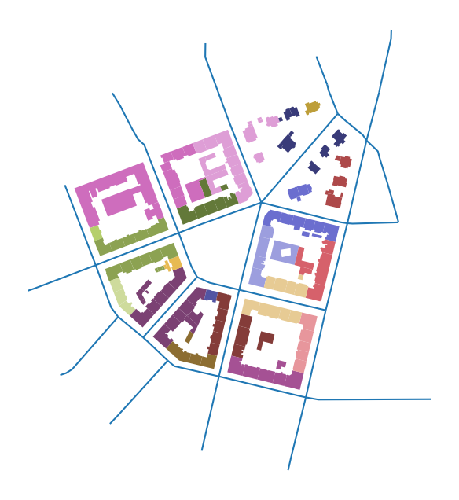
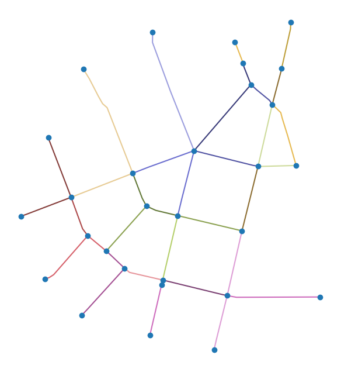
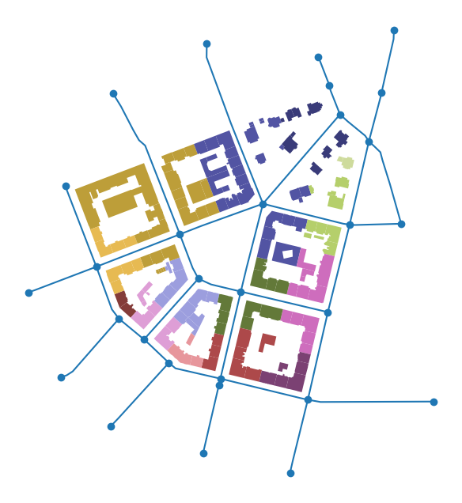

Linking elements together¶
As explained in the Data Structure chapter, momepy relies on links between different morphological elements. Each element has an index, and each of the small-scale elements also needs to know the index of the relevant higher-scale element. The case of block index is explained in the previous chapter, momepy.generate_blocks generates it together with blocks gdf.
Getting the index of the street network¶
This notebook will explore how to link street network, both nodes and edges, to buildings and tessellation.
Edges¶
For linking street network edges to buildings (or tessellation or other elements), momepy offers momepy.get_nearest_street. It simply returns a Series of indices of nearest streets for analysed gdf.
import geopandas as gpd
import momepy
For illustration, we can use bubenec dataset embedded in momepy.
path = momepy.datasets.get_path("bubenec")
buildings = gpd.read_file(path, layer="buildings")
streets = gpd.read_file(path, layer="streets")
tessellation = gpd.read_file(path, layer="tessellation")
Then we can link it to buildings. The only argument we might want to look at is max_distance, which is a maximum distance within which to query for nearest street. Note that for large areas, it is advised to set a limit to avoid long processing times.
buildings["street_index"] = momepy.get_nearest_street(buildings, streets)
ax = buildings.plot(
column="street_index", categorical=True, cmap="tab20b", figsize=(8, 8)
)
streets.plot(ax=ax)
ax.set_axis_off()

Note: colormap does not have enough colours, that is why everything on the top-left looks the same. It is not.
Nodes¶
The situation with nodes is slightly more complicated as you usually don’t have or even need nodes. However, momepy includes some functions which are calculated on nodes (mostly in graph module). For that reason, we will pretend that we follow the usual workflow:
Street network
GeoDataFrame(edges only)networkx
GraphStreet network - edges and nodes as separate
GeoDataFrames.
graph = momepy.gdf_to_nx(streets)
Some graph-based analysis happens here.
nodes, edges = momepy.nx_to_gdf(graph)
ax = edges.plot(
column=edges.index.values, categorical=True, cmap="tab20b", figsize=(8, 8)
)
nodes.plot(ax=ax, zorder=2)
ax.set_axis_off()

For attaching node ID to buildings, we will need both, nodes and edges. Given the index edges created from the graph likely do not match the streets, determine which edge building belongs to using momepy.get_nearest_street and then find out which end of the edge is the closer one.
buildings["edge_index"] = momepy.get_nearest_street(buildings, edges)
The node index is also inlcuded in edges as well, denoting each end of edge. (Length of the edge is also present as it was necessary to keep as an attribute for the graph.)
edges.head()
| geometry | mm_len | node_start | node_end | |
|---|---|---|---|---|
| 0 | LINESTRING (1603585.64 6464428.774, 1603413.20... | 264.103950 | 0 | 1 |
| 1 | LINESTRING (1603561.74 6464494.467, 1603564.63... | 70.020202 | 0 | 8 |
| 2 | LINESTRING (1603585.64 6464428.774, 1603603.09... | 88.924305 | 0 | 6 |
| 3 | LINESTRING (1603607.303 6464181.853, 1603592.8... | 199.746503 | 1 | 4 |
| 4 | LINESTRING (1603363.558 6464031.885, 1603376.5... | 203.014090 | 1 | 3 |
We can now use momepy.get_nearest_node to attach nodes. Keep in mind that this is not just a nearest neighbor join, each nearest node is ensured to be on one end of the nearest edge.
buildings["node_index"] = momepy.get_nearest_node(
buildings, nodes, edges, buildings["edge_index"]
)
ax = buildings.plot(
column="node_index", categorical=True, cmap="tab20b", figsize=(8, 8)
)
nodes.plot(ax=ax, zorder=2)
edges.plot(ax=ax, zorder=1)
ax.set_axis_off()

Transfer IDs to tessellation¶
All IDs are now stored in buildings gdf. We can copy them to tessellation directly as both share the same index.
tessellation[["edge_index", "node_index"]] = buildings[
["edge_index", "node_index"]
]
tessellation.head()
| uID | geometry | edge_index | node_index | |
|---|---|---|---|---|
| 0 | 1.0 | POLYGON ((1603578.489 6464344.527, 1603577.04 ... | 0.0 | 0.0 |
| 1 | 2.0 | POLYGON ((1603067.112 6464177.926, 1603054.848... | 20.0 | 9.0 |
| 2 | 3.0 | POLYGON ((1602978.618 6464156.859, 1603006.384... | 22.0 | 11.0 |
| 3 | 4.0 | POLYGON ((1603056.595 6464093.903, 1603011.539... | 19.0 | 11.0 |
| 4 | 5.0 | POLYGON ((1603110.459 6464114.367, 1603109.099... | 19.0 | 11.0 |
Now we should be able to link all elements together as needed for all types of morphometric analysis in momepy.